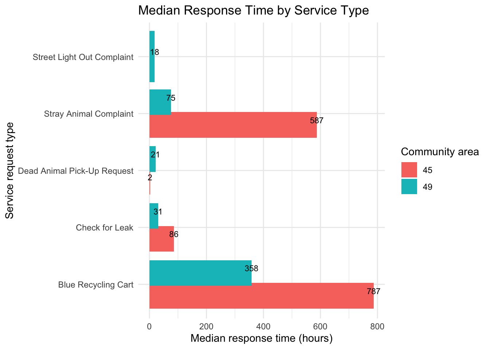
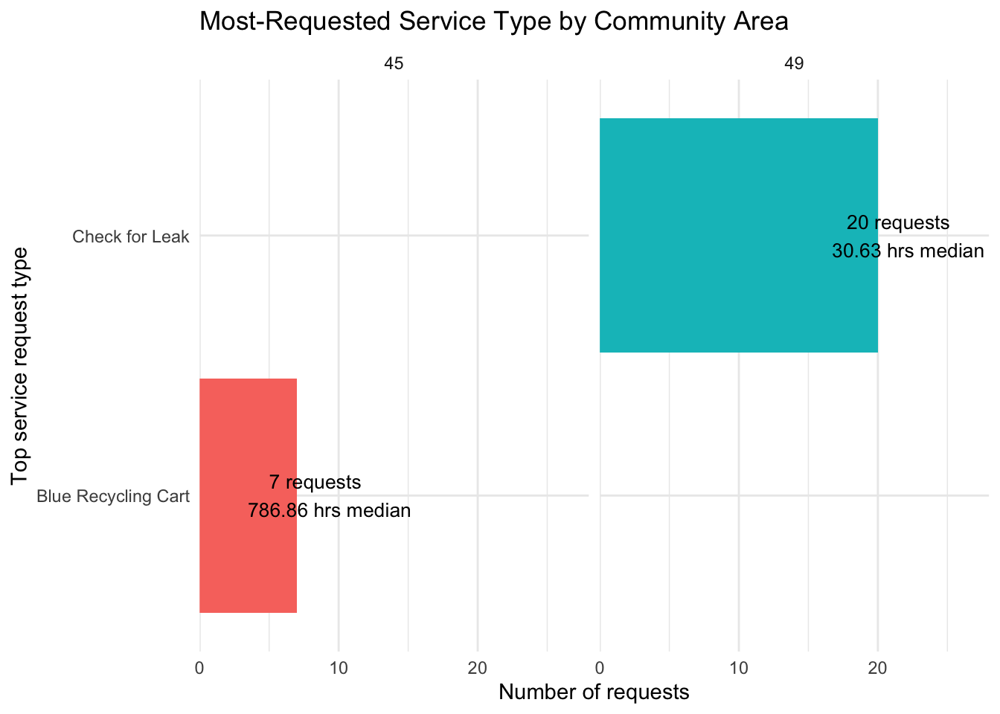

dataset_id <- "v6vf-nfxy"
url <- paste0(
"https://data.cityofchicago.org/resource/",
dataset_id,
".json"
)Reproducible Reporting
Data summary
This report analyzes 311 service requests by community areas 45 and 49 in Chicago
response <- GET(
url,
query = list(
"$where" = paste(
"created_department = '311 City Services'", #Data was entered by 311 services
"AND created_date >= '2026-01-01T00:00:00'", #Created first 6 months of 2026
"AND created_date < '2026-06-02T00:00:00'",
"AND closed_date >= '2026-01-01T00:00:00'",
"AND closed_date < '2026-06-02T00:00:00'", #Closed first 6 months of 2026
"AND community_area IS NOT NULL" #No null values in this column
),
"$limit" = 10000
)
)stop_for_status(response)
data <- fromJSON(content(response, "text", encoding = "UTF-8"))filtered <- data%>%
filter(
community_area %in% c(params$community_area1, params$community_area2),
toupper(trimws(sr_type)) != "311 INFORMATION ONLY CALL",
!is.na(created_date),
!is.na(closed_date)
) %>%
mutate(
response_hours = as.numeric(
difftime(ymd_hms(closed_date), ymd_hms(created_date), units = "hours")
)
) %>%
filter(response_hours >= 0)
cat(
"Found", nrow(filtered), "Service Requests in",
params$community_area1, "and", params$community_area2,
". Most common type of service request:",
params$sr_type, "\n"
)Found 161 Service Requests in 45 and 49 . Most common type of service request: - Total requests in filtered dataset: 161
Summary Table of service requests in Community #45 and Community #49
top_sr <- filtered %>%
count(sr_type, sort = TRUE) %>%
slice_head(n = params$top_n) %>%
pull(sr_type)comparison <- filtered %>%
filter(sr_type %in% top_sr) %>%
group_by(community_area, sr_type) %>%
summarise(
requests = n(),
median_response_hours = round(
median(response_hours, na.rm = TRUE),
2
),
.groups = "drop"
) %>%
arrange(community_area, desc(requests)) %>%
rename(
`Community Area` = community_area,
`Service Request Type` = sr_type,
`Number of Requests` = requests,
`Median Response (Hours)` = median_response_hours
)Visualization 1
knitr::kable(
comparison,
format = "pipe",
caption = "Service requests and median response time by community area"
)| Community Area | Service Request Type | Number of Requests | Median Response (Hours) |
|---|---|---|---|
| 45 | Blue Recycling Cart | 7 | 786.86 |
| 45 | Check for Leak | 1 | 85.85 |
| 45 | Dead Animal Pick-Up Request | 1 | 2.25 |
| 45 | Stray Animal Complaint | 1 | 587.34 |
| 49 | Check for Leak | 20 | 30.63 |
| 49 | Street Light Out Complaint | 12 | 18.14 |
| 49 | Stray Animal Complaint | 11 | 75.28 |
| 49 | Dead Animal Pick-Up Request | 9 | 21.39 |
| 49 | Blue Recycling Cart | 3 | 358.42 |
Visualization 2
ggplot(
comparison,
aes(x = `Service Request Type`, y = `Median Response (Hours)`, fill = `Community Area`)
) +
geom_col(position = position_dodge(width = 0.8)) +
geom_text(
aes(label = round(`Median Response (Hours)`)),
position = position_dodge(width = 0.8),
vjust = -0.3,
size = 3
) +
coord_flip() +
labs(
title = "Median Response Time by Service Type",
x = "Service request type",
y = "Median response time (hours)",
fill = "Community area"
) +
theme_minimal()
top_type_by_area <- filtered %>%
group_by(community_area, sr_type) %>%
summarise(
requests = n(),
median_response_hours = median(response_hours, na.rm = TRUE),
.groups = "drop"
) %>%
group_by(community_area) %>%
slice_max(order_by = requests, n = 1, with_ties = FALSE) %>%
ungroup()Visualization 3
ggplot(
top_type_by_area,
aes(x = sr_type, y = requests, fill = community_area)
) +
geom_col(show.legend = FALSE) +
geom_text(
aes(label = paste0(
requests, " requests\n",
round(median_response_hours, 2), " hrs median"
)),
hjust = 0.3,
size = 3.5
) +
coord_flip() +
facet_wrap(~ community_area) +
scale_y_continuous(expand = expansion(mult = c(0, 0.4))) +
labs(
title = "Most-Requested Service Type by Community Area",
x = "Top service request type",
y = "Number of requests"
) +
theme_minimal()